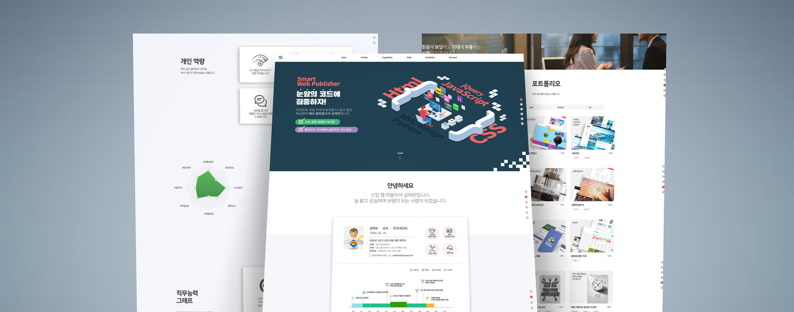

- 이력서 랜딩 페이지 ver 1
이력서와 포트폴리오를 담은 랜딩페이지입니다. 스크롤 다운시 상단 내비 슬라이드 업 및 스크롤 업시 내비고정, 클릭 시 특정 위치로 이동. 사이드 내비 와 각종 페이드 인 아웃 애니메이션 플러그인이 사용되었습니다. 기존까지 사용해온 CSS "요소.선택자{스타일}" 작성방식을 탈피하여 보편적인 코딩 컨벤션 스타일에 맞게 변경하였습니다.
-
- Date
- 2019. 12
-
- Role
- Web design, Publishing 100%
-
- Viewport
- Adaptive
-
- Cross Browsing
- Edge, Ie10+, Chrome, Firefox, Opera
-
- URL
- # Main
| Category | Source | Related keywords |
|---|---|---|
| html | index.html | html5 |
| css | style.css stylemodal.css lightbox.css | css3 |
| js | floatingMenu.js fnv.js fp.js html5shiv.js jquery.easypiechart.js jquery.modal.js light_box.js light_box_modal.js main.js menu_fixed.js menu2.js tab_menu.js | jquery |